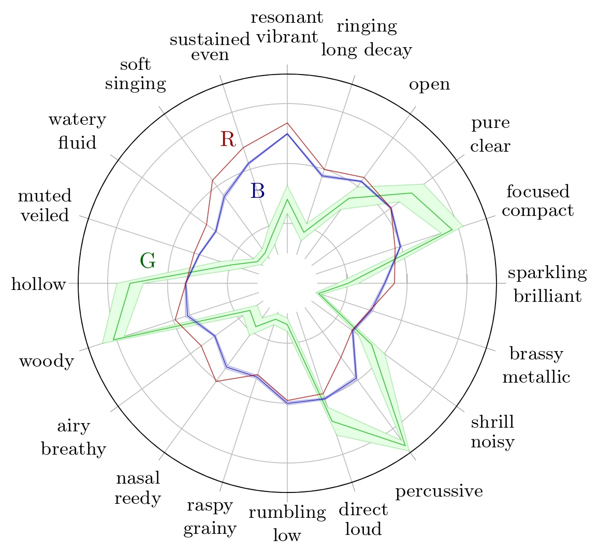
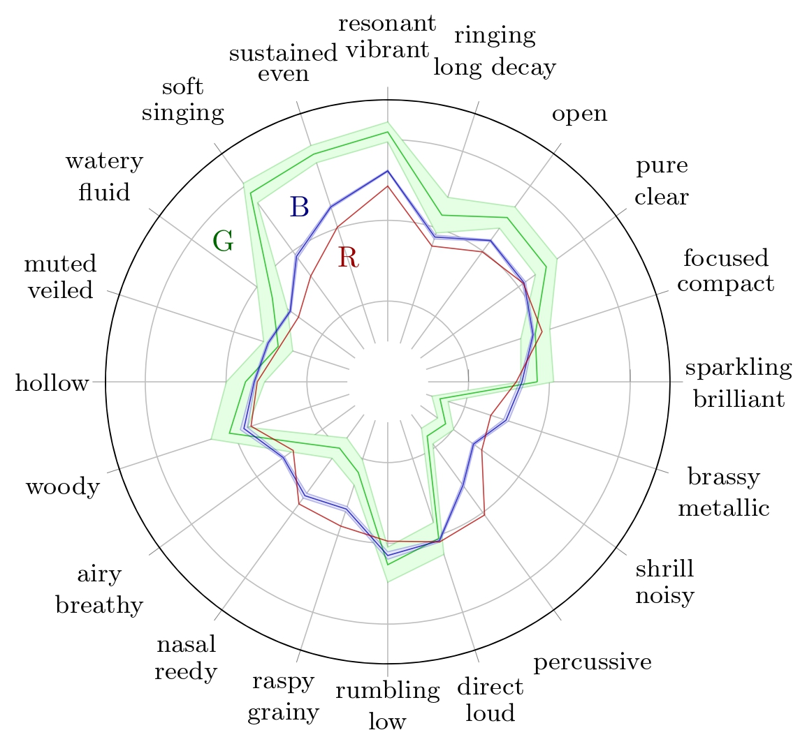

TokenSynth Assessment using TTP-RANE
Synthesized Wood Block assessment
We start the analysis of the synthesis by observing the predicted TTP of the instrument with the highest MAE, here, the wood block.

We observe on the wood block averaged predicted TTP that the timbre traits with the highest errors are 'woody' and 'percussive'. While 'woody' can hardly be assessed on a spectrogram, we can make observations with respect to the 'percussive' trait.


The wood block is a percussive instrument, so its ground truth value of the 'percussive' trait is about 0.93. The prediction of this trait for the synthesized sample is 0.32. We can observe on the spectrograms that the synthesized sample is sustained, contrary to the RWC sample, which decays quickly after impact. This explains why its 'percussive' trait prediction is far below the ground truth.
Synthesized Cello assessment
We can also analyze more subtle defects by observing any timber trait of a any instrument. For instance, we can analyze the 'resonant/vibrant' trait of the cello.

We observe on the wood block averaged predicted TTP that the timbre traits with the highest errors are 'woody' and 'percussive'. While 'woody' can hardly be assessed on a spectrogram, we can make observations with respect to the 'percussive' trait.


The 'resonant/vibrant' ground truth value of the cello is 0.865, the highest value for this trait in the 31 instruments considered here, suggesting it is an essential timbral quality for the cello. The prediction of this trait for the synthesized sample is 0.66. The spectrogram of the RWC sample shows harmonics whose frequencies fluctuate slightly over time, plausibly creating a 'vibrant' perceptual quality related to the pronounced vibrato in the sample. In contrast, the synthesized sample's spectrogram lacks these frequency oscillations in its harmonics. This difference helps explain why the synthesized sample receives a lower prediction score for the 'resonant/vibrant' attribute.